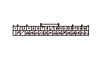

DTC 35
DTC 35:
操作スイッチ コードの短絡
操作スイッチとリフタ コントロール ユニット間（FBSL FWD SW、FBSL BWD SW、REC UP SW、REC DN SW、LIFT UP SW、LIFT DN SW、US COMライン）の短絡点検
1-1
リフタ コントロール ユニット カプラB（32P）の接続を外す
1-2
シート スライド スイッチ5Pカプラの接続を外す
1-3
リクライニング スイッチ5Pカプラの接続を外す
1-4
回転昇降スイッチ5Pカプラの接続を外す
1-5
リフタ コントロール ユニット カプラB（32P）各端子とボディ アース間の導通を点検する
32Pカプラ（配線色）
No.3（若葉）、No.4（桃）、No.5（緑）、No.6（白）、No.7（青）、No.8（黄）、No.10（灰）
◆ 導通があるか
YES
-
リフタ コントロール ユニットと操作スイッチ間のコードの短絡
NO
-
ステップ
2
へ進む
再現テスト
2-1
リフタ コントロール ユニット カプラB（32P） を接続する
2-2
シート スライド スイッチ5Pカプラを接続する
2-3
リクライニング スイッチ5Pカプラを接続する
2-4
回転昇降スイッチ5Pカプラを接続する
2-5
リフタ コントロール ユニットの初期位置学習を行う
2-6
シート スライド、リクライニング、および回転昇降スイッチをそれぞれ操作して、各動作を行う
2-7
自己診断モードでDTCを確認する
◆ DTC 35を吹鳴するか
YES
-
リフタ コントロール ユニットを交換する
NO
-
一過性故障、現在システムは正常
